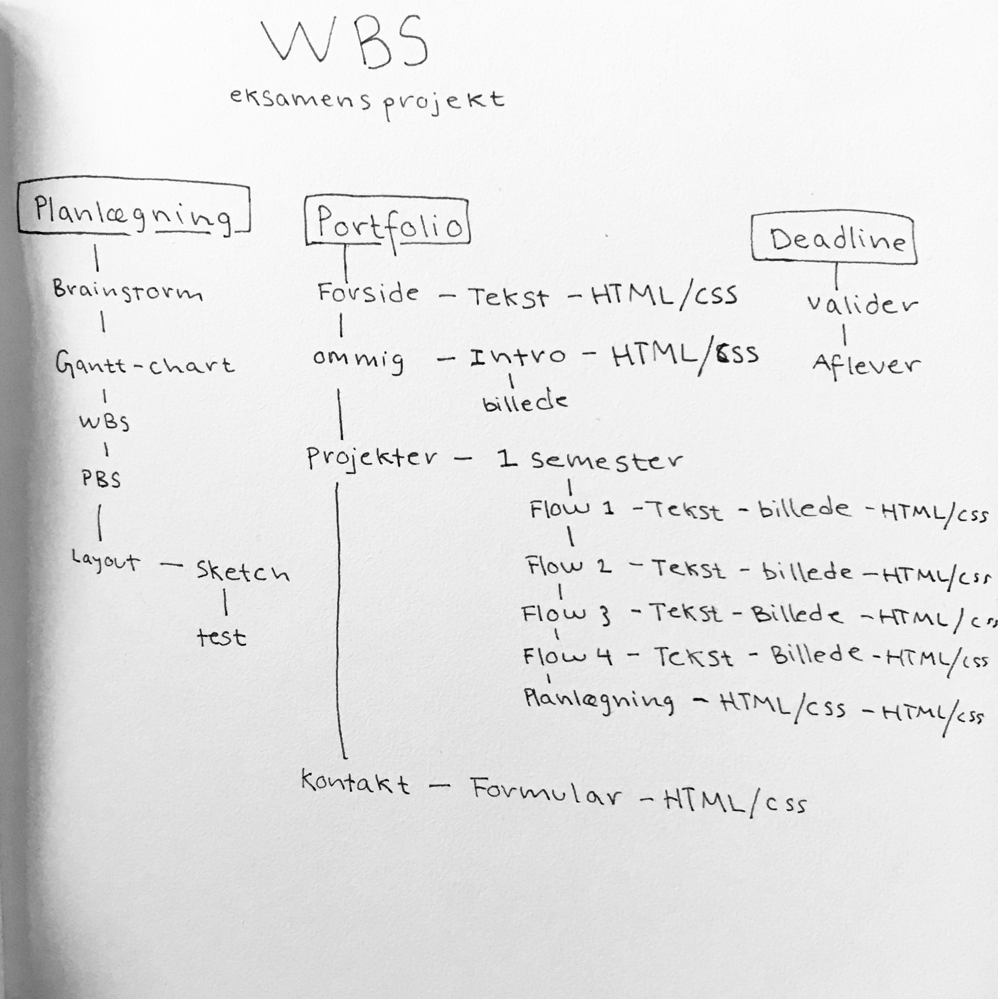
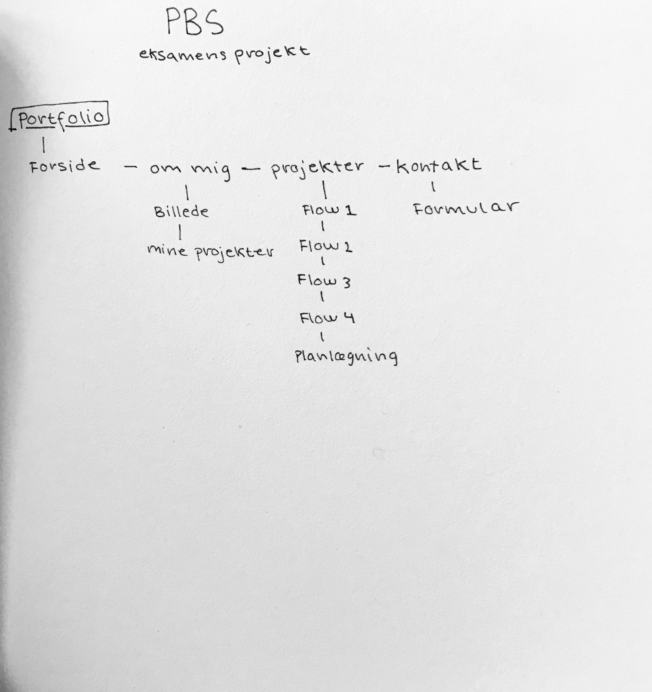

Jeg har arbejdet med Gantt-chart, WBS og PBS.
Til mit Gant-chart har jeg brugt en side der hedder "Proggio.com".
Jeg valgte den side fordi jeg synes det var den der virkede mest oplagt til det jeg gerne ville have.
Der er en mulighed for at lave underemner til ens projekter, hvilket gør det hele meget overskueligt.
Udover det kanman angive hvor mange procent man er færdig med en opgave. Så på den måde kan man se hvor meget eller lidt man mangler for at have fuldført opgaven helt.
WBS

Min WBS viser hvilke arbejdsopgaver jeg har skulle når for at komme i mål.
PBS

Min PBS definere strukturen for mit projekt.